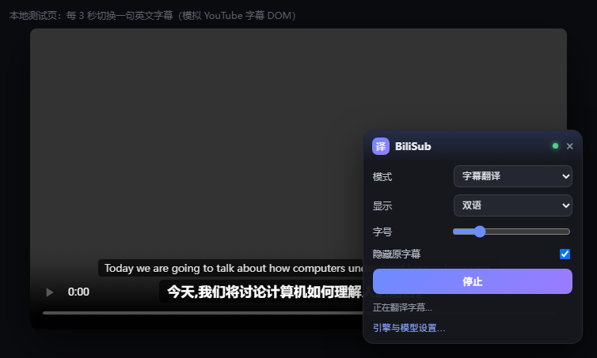

BiliSub 双语字幕 · 使用说明
本地模型翻译，音频与字幕不出本机

一、安装
- 双击
install.cmd，等待脚本装完（首次约 2–5 分钟）。
- 浏览器会自动打开
edge://extensions。
- 打开右上角「开发人员模式」。
- 点「加载解压缩的扩展」，选择本目录下的
extension 文件夹（路径已复制到剪贴板，可直接粘贴）。
- 点扩展图标 →「引擎与模型设置」→ 点「安装」下载推荐模型。
引擎会随开机自动启动。如果提示“未连接”，双击 start-engine.cmd 即可。
二、日常使用
- 打开视频页面（YouTube、B 站或其他网站）。
- 点右下角蓝色「译」按钮。
- 选择模式：
- 字幕翻译：读取视频自带的字幕并翻译，速度最快、质量最好。
- 原声识别：抓当前标签页的声音做识别，适合没有字幕的视频。
- 点「开始」，字幕会显示在画面下方。
原声识别需要点一次扩展图标（或按 Alt+Shift+S）。这是浏览器的安全限制：抓取标签页声音必须由用户主动触发。
三、浮层设置
| 选项 | 说明 |
|---|
| 显示 | 双语 / 仅译文 / 仅原文 |
| 字号 | 按视频高度自动缩放，可手动加减 |
| 隐藏原字幕 | 开启后自动隐藏页面自带字幕，避免重叠 |
四、模型目录与自定义模型
模型随安装包预装，插件里不再提供下载或改目录。设置页只显示已安装模型，并提供「模型自检」。
更换模型目录
- 编辑
engine\config.json 里的 models_dir（例如 "E:\\AI\\BiliSub\\models"）
- 把现有模型文件夹整体移动到新目录
- 重启引擎（重新运行
start-engine.cmd）
添加其它模型
- Ollama 模型：先执行
ollama pull qwen2.5:7b，再在插件设置页「翻译引擎」下拉里直接选，重启无需操作。
- CT2 模型：把模型文件放进
models\<模型id>\，并在 engine\catalog.json 里加一条（id / kind / files），重启引擎后即可在设置页选中。
- 是否需要下载功能由安装包侧决定；插件本身保持“只读已安装模型”的轻量设计。
五、常见问题
- 提示本地引擎未连接：运行
start-engine.cmd；或看端口 8765 是否被占用。
- 翻译很慢：第一次要加载模型，稍等几秒；也可在设置页把高质量模型换成 OPUS。
- 没有字幕：换「听声」模式，或确认视频本身有 CC 字幕。
- 听声没反应：浏览器要求先“调用扩展”，点一次工具栏图标或按快捷键。
- Netflix 等平台没反应：DRM 内容无法抓取，属于平台限制。
- 画中画里没有字幕：PiP 是独立窗口，浏览器不允许扩展绘制。
六、卸载
- 运行
uninstall.ps1（会移除开机自启，可选删除模型）。
- 到
edge://extensions 手动移除扩展。
BiliSub v0.1.0 · 仅供个人学习使用